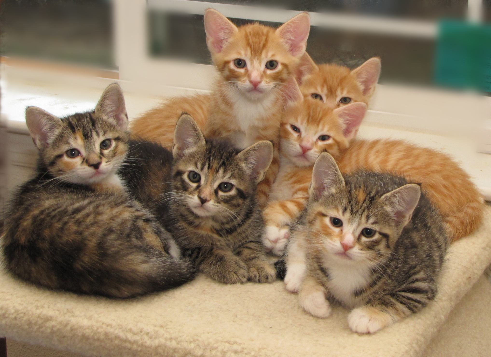
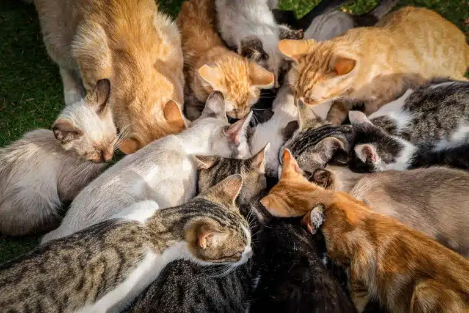

Un foyer pour chaque petit chat

Chaque chat mérite une seconde chance.
Nous aidons les animaux abandonnés à trouver la famille idéale.
Depuis 2021, plus de 50 adoptions réussites.
Chez Les Petites Pattes, nous croyons que chaque chat mérite
une seconde chance et un foyer rempli d'amour.
Notre mission est d'accueillir, de protéger et de prendre soin
des chats abandonnés ou en difficulté.
Nous leur offrons un environnement chaleureux et sécurisé,
où ils peuvent retrouver confiance et sérénité.
Notre plus grand bonheur ?
Voir nos petits pensionnaires rejoindre une famille aimante et
commencer une nouvelle vie.
